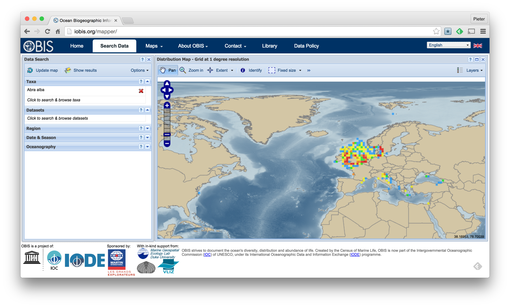
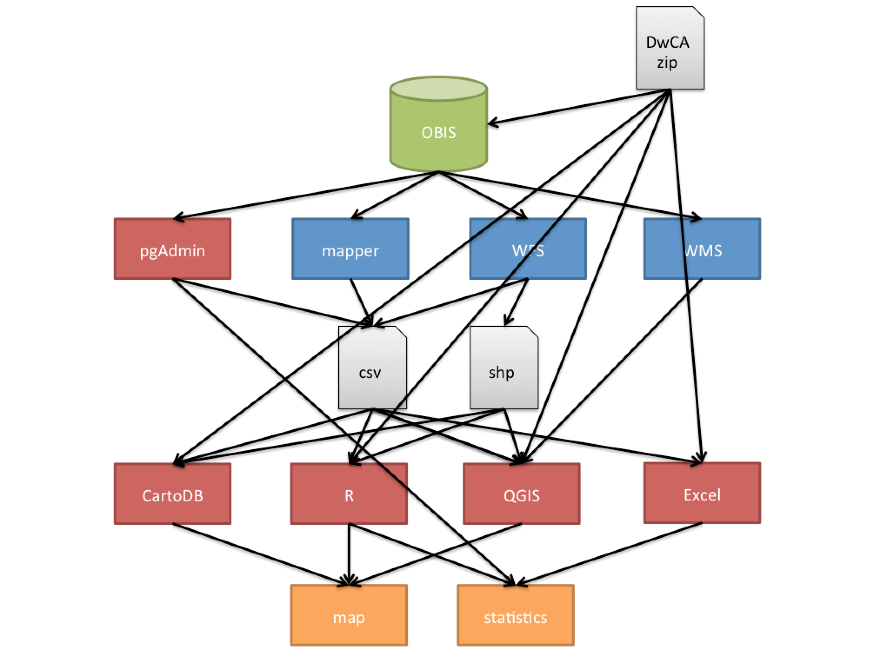

class: center, middle # Data access --- # Mapper <p class="center"></p> --- # Mapper 1. Go to the OBIS Mapper application at [http://iobis.org/mapper/](http://iobis.org/mapper/) 2. Click `Click to search & browse taxa` in the `Data Search` panel on the left 3. Enter a taxon name in the search box and select the taxon in the results list 4. Close the `Taxa Search` panel 5. Switch between gridded data and point data using the `Layers` control in the upper right hand corner 6. Select `Show results` in the `Data search` panel 7. Navigate to the `Download` tab 8. Select `Summary` for gridded data or `Points` for individual occurrences 9. Choose a file format to download the data --- class: center, middle # Data processing --- <p class="center"></p>